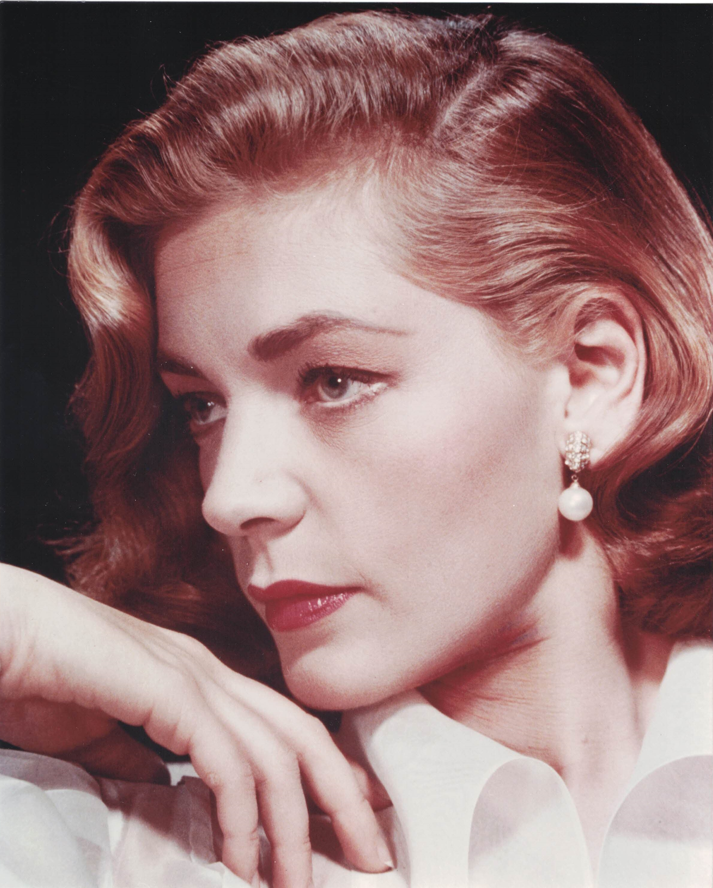

Product No. HEC-0022
$14.95
Shipping: $8.95
Description
Color 8x10 photograph.
Full Description
Lauren Bacall (Deceased) was an American actress and model renowned for her distinctive deep voice, confident screen presence, and classic Hollywood glamour. She was born Betty Joan Perske on September 16, 1924, in New York City. Bacall began her career as a fashion model before making a sensational film debut opposite Humphrey Bogart in To Have and Have Not (1944). Her performance made her an immediate star and began one of Hollywood’s most famous screen and real-life partnerships. Bacall and Bogart married in 1945 and remained together until his death in 1957. The pair also appeared together in The Big Sleep (1946), Dark Passage (1947), and Key Largo (1948). Bacall’s other notable films included How to Marry a Millionaire (1953), Written on the Wind (1956), Murder on the Orient Express (1974), The Shootist (1976), and The Mirror Has Two Faces (1996), for which she received an Academy Award nomination. Bacall also enjoyed great success on Broadway, winning Tony Awards for Applause and Woman of the Year. In 2009, she received an Academy Honorary Award recognizing her distinguished career. Lauren Bacall died on August 12, 2014, at age 89. She remains one of the most recognizable and enduring stars of Hollywood’s Golden Age.
Condition
Excellent condition